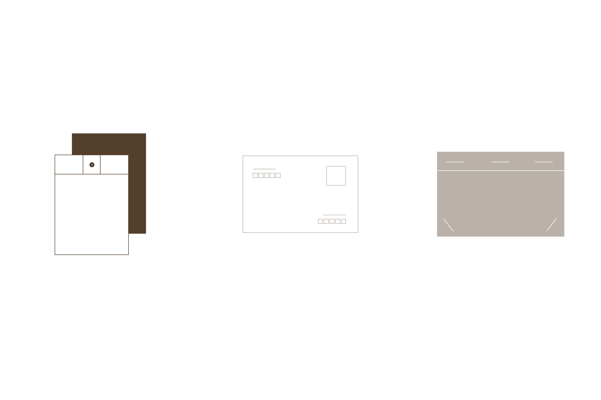
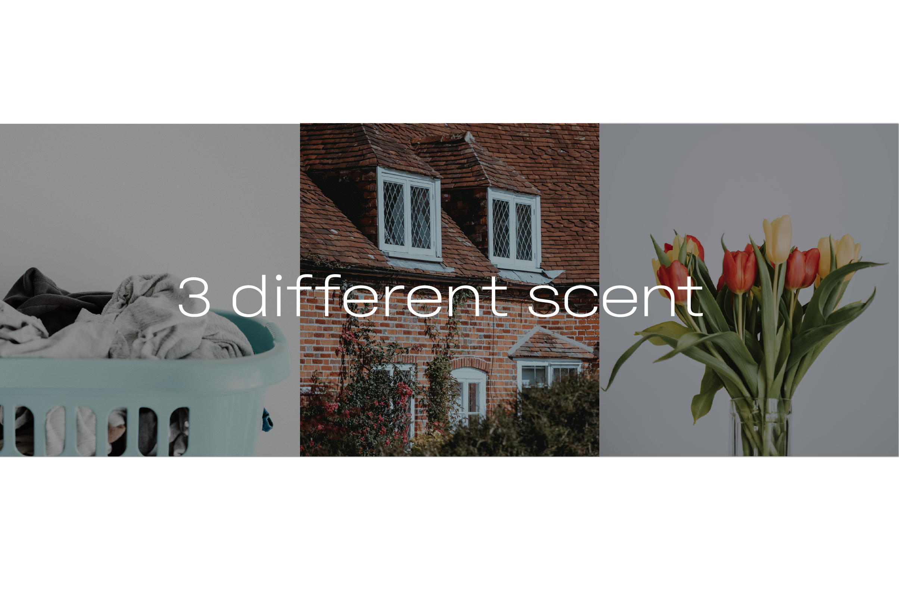
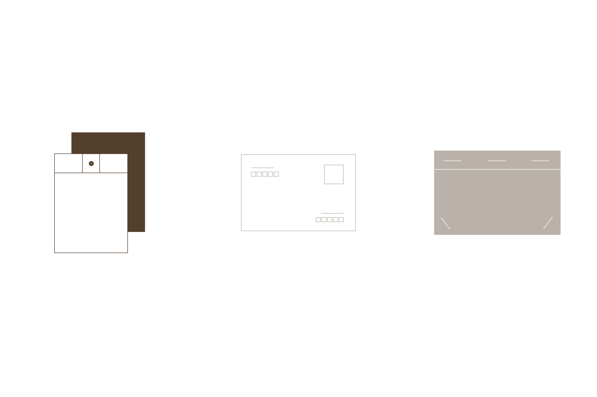
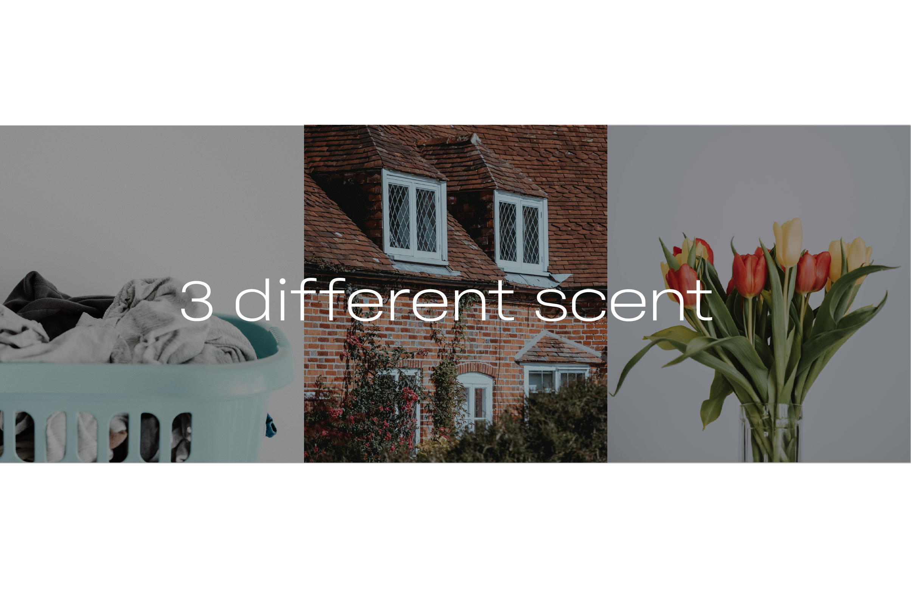
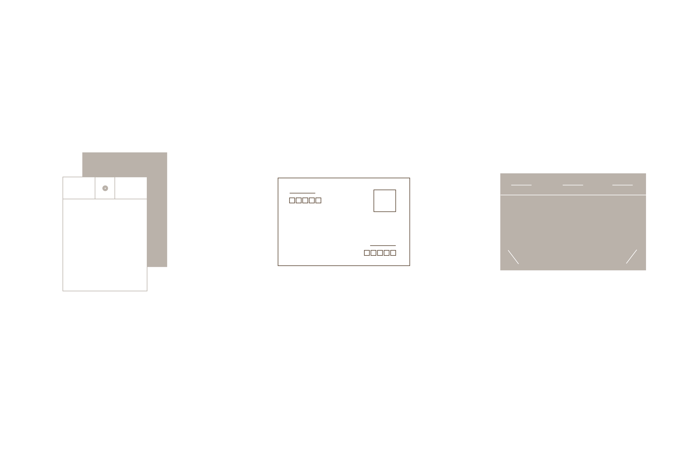
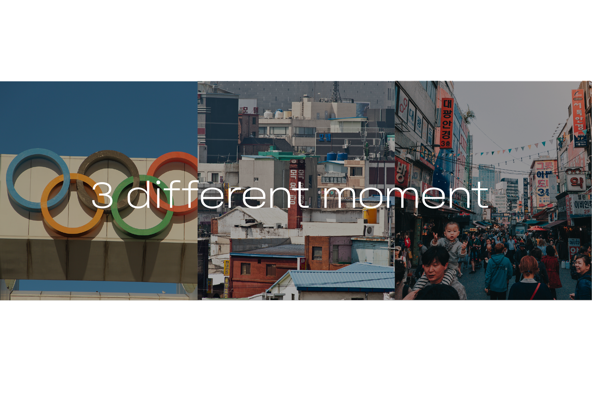

전달하고 싶은 향을 골라주세요
 가을에 어울리는 향으로 엄선했습니다.
IFRA 인증 최고급 프랑스산 향료가 사용된 이 제품은,
그윽하면서도 오래 지속되는 향기를 선사합니다.


향을 맡은 후 옛 기억이
떠오르신 적, 있으신가요?
프루스트 현상이란,
마르셀 프루스트의 소설 <잃어버린 시간을 찾아서>속
주인공이 차에 적신 마들렌 조각을 머금는 순간
아주 오래 된 유년의 기억을 환기하는 장면에서 비롯된 용어입니다.
"순간을 담습니다."
언젠가 추억이 될 이 순간에,
마음과 함께 향을 담아 전달해보세요
이 순간을 영원히 기억하게 될 거에요.
엽서에 편지를 남기고 향을 입혀 전해주면
그 기억이 오래 남고, 또 다시 꺼내 읽었을 때 나는 잔향이
다시 그 순간의 기억을 불러일으킵니다.
가을에 엽서와 함께 향을 전달해
소중한 사람들에게 순간을 선물해보세요.
전달하고 싶은 향을 골라주세요
 가을에 어울리는 향으로 엄선했습니다.
IFRA 인증 최고급 프랑스산 향료가 사용된 이 제품은,
그윽하면서도 오래 지속되는 향기를 선사합니다.
마음을 담을 엽서를 골라주세요
 서울에서 필름으로 촬영되어
순간의 의미가 담겨있는 사진 엽서입니다.